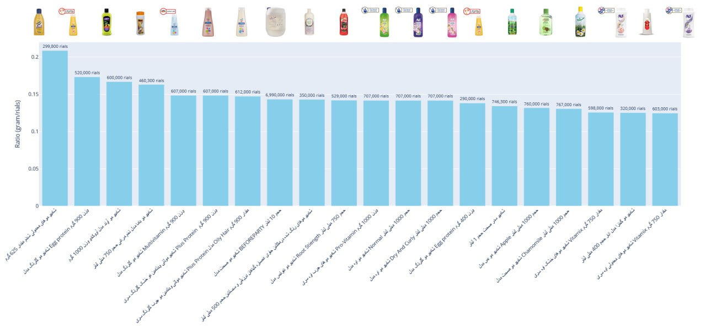
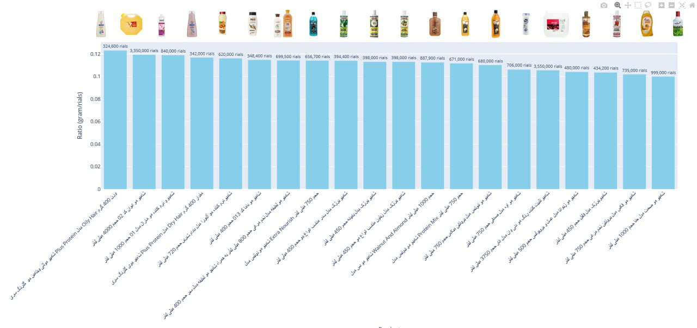

داشتم فکر میکردم کدوم شامپو از بقیه قیمت بهتری داره. مشکل اینه که شامپوها تو حجمهای مختلف فروخته میشن و مقایسهی قیمتِ روی برچسب هیچ معنیای نداره. چیزی که باید مقایسه بشه نسبت وزن به قیمته.
پس نمودار نسبت وزن به قیمت رو رسم کردم و نتیجه این شد:


اختلاف بین سر و ته لیست اونقدر زیاده که واقعاً ارزش نگاهکردن داره.
پ.ن. این دو تا نمودار رو در حالی کدش رو نوشتم که دستشویی داشتم و سریع جمعش کردم :)
این کار را اول در کانال تلگرام و توییت گذاشتم؛ این نوشته همان است، کمی کاملتر.
nb.neighbours()
| title | date | |
|---|---|---|
| prev | کد مورس همستر را از کجا میآوردم؟ | ۱۴۰۳/۰۳ |
| next | در چهل سال گذشته چند روز تعطیل بودهایم؟ | ۱۴۰۳/۰۶ |